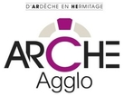

Contexte
L'Hermitage Tournonais Communauté de communes (HTCC) se situe à environ 100 km au sud de Lyon, de part et d'autre du Rhône, à la jonction de deux départements : Tain-l’Hermitage se trouve dans la Drôme et Tournon est en Ardèche. Cette communauté de communes est composée de 26 communes, dont 13 dans la Drôme et 13 dans l’Ardèche. Elle comporte 42874 habitants pour une superficie de 277,29 km². Les deux villes principales sont Tournon et Tain-l’Hermitage. Il y a en moyenne une densité de 154 habitants au km² et 15 communes ont moins de 1000 habitants.
En janvier 2017, la HTCC à fusionné avec plusieurs autres communautés de communes pour former la communauté d’agglomération de Tain l’Hermitage Tournon Herbasse Pays de Saint-Félicien, dit ARCHE AGGLO. Cette nouvelle communauté de communes contient 41 communes partagées entre l’Ardèche et l’Hermitage pour un total de 56000 habitants. Ce territoire est principalement rural, très réputé pour ses vignobles et un secteur touristique en pleine expansion.
Notre étude
Le projet fait suite à une interrogation de notre commanditaire, concernant l'utilisation du numérique dans la HTCC. Elle a souhaité qu'un diagnostic soit réalisé, afin d'objectiver la situation, d'autant plus qu'il n’existe a priori pas de document public de ce type à l'heure actuelle. Ce diagnostic devait initialement être effectué sur le territoire de la HTCC, mais étant donné le nouveau découpage administratif, il porte sur l’ensemble d’ARCHE AGGLO.
Cahier des charges
Le projet répond à quatre fonctions techniques :
- Réaliser un état des lieux en matière de numérique dans l'ARCHE AGGLO pour avoir une vision actuelle et globale de la situation.
- L’état des lieux doit porter sur 4 domaines : les infrastructures de télécommunication, les services proposés et utilisés, l’accès à Internet, les données numérisées.
- Les acteurs de l’étude seront divisés en 4 groupes : les entreprises, les services publics, les associations, le grand public.
- On distinguera dans la mesure du possible les fonctions de producteur ou de consommateur.
- Cerner les besoins des différents acteurs dans les domaines ci-dessus.
- Proposer des préconisations aux instances publiques afin de profiter au mieux des opportunités du numérique, dans un esprit informatif et positif :
- Pour plusieurs triplets 'acteur, domaine, fonction'
- Hiérarchisées selon leur nécessité (lié au besoin des utilisateurs) et leur faisabilité (financière et matérielle)
- Elles devront comprendre:
- Un fondement/un constat issu principalement de l’état des lieux
- La description de la proposition, qui devra être ciblée, précise, et préciser les moyens mis en jeu, ainsi que le but recherché, en respectant le principe SMART
- Une anticipation des retombées envisageables en s’appuyant sur des réalités observées ailleurs
- Une prise en compte des possibles risques après sa mise en place
- Une évaluation des coûts financiers et humains, et des délais
- Les conclusions de nos analyses devront être présentées de manière à rendre les informations accessibles et intelligibles pour ces acteurs.